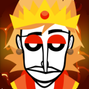
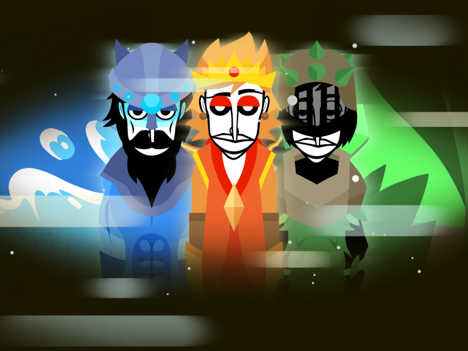

- Elementals -
|  |
Come join us in this story about the four elements and they kingdoms. |
|
Elementals Team: (Everything) Status: WIP Inspired by: None Release Date: None Linked Mods: None |
 |
|
Download Links PC: None Android: None Developer Notes: This mod it's gonna release when GTA 6 it's out 😭 |